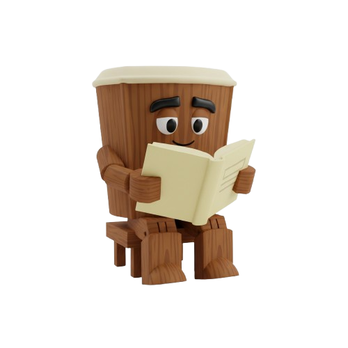
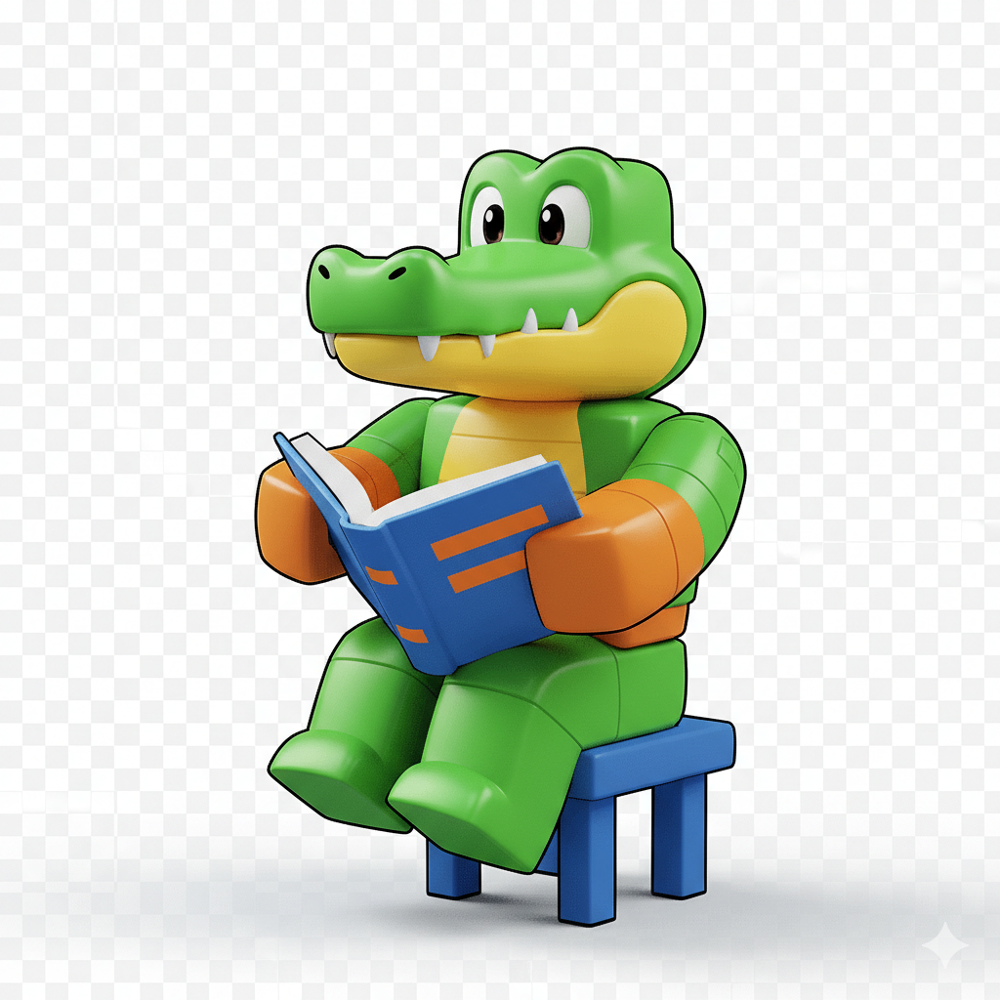

PETUNJUK PENGGUNAAN

- Bacalah dengan saksama setiap petunjuk yang ada di halaman ini!
- Klik tombol “Mulai Belajar!” untuk memulai perjalanan belajar!
- Perhatikan setiap contoh ide pokok dan ide pendukung dengan cermat!
- Gunakan tombol panah di bawah layar untuk berpindah halaman!
- Saat mengerjakan soal, diskusikan dengan teman kelompok!
- Nikmati pembelajaran ini dengan semangat dan rasa ingin tahu yang tinggi!